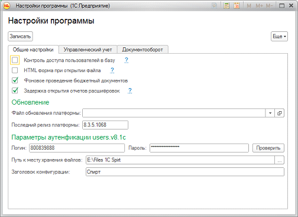

Настройки 1С: Управление бизнесом

Контроль доступа пользователей в базу» галочка связана с контролем пользователей на вход в 1С с незарегистрированных (неподтвержденных админом 1С) рабочих станций. Так и не стали использовать. Использовать можно по желанию.«HTML
форма при открытии файла» - открывать файлы, загруженные в 1С можно непосредственно в окне 1С через GoogleDrive. Файлы форматов doc, xlx открывает неплохо, но требует заброса файл на GDrive. Регламентной процедурой GDrive очищается раз в сутки. Настройки доступа к GDrive в обработке в сервисе. Нужна также публичная папка на GDrive, в которую будут кидаться темповые файлы для открытия. Использовать можно по желанию.«
Фоновое проведение бюдж документов» - галочка позволяет проводить бюджетные документы в фоне. Годовые бюджеты могут проводиться достаточно длительное время. Помогает оптимизировать работу бюдж отдела . Использовать можно по желанию.«
Задержка открытия отчетов расшифровок» - в 1с 8.3.5.1068 словили неприятный глюк с зависанием клиента при открытии отчетов с УЖЕ заполненным результатом (как правило возникало при расшифровке отчетов). Глюк непостоянный, возникал спонтанно. Пришлось вставить в большинство отчетов задержку отображения табличного поля «Результат» - помогло. Оставили опционально в надежде на исправление в след версиях. Обязательно к использованию в версии 8.3.5.1068.Параметры аутентификации нужны для заполнения данных контрагента по ИНН (есть команда) . Обязательно к использованию.
«
Путь к месту хранения файлов» - принято решение хранить файлы не в 1С в виде двоич данных, так как это делало объем базы нереальным, а в обычной папке на компьютере, где крутится сервер 1С. Вместе с базой мы отдадим архив с файлами, который нужно будет разместить на той же машине что и сервер 1С и указать путь к папке с фалами в данной константе. Работа с файлами не подразумевает версионность – все упрощено. Обязательно к использованию, критично.